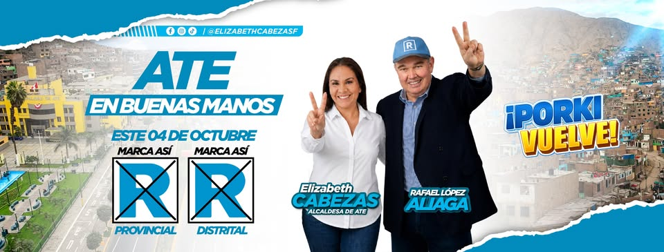

280
camaras apagadas denunciadas
Elizabeth expuso publicamente que Ate tuvo camaras sin conectividad durante seis meses.
Alcaldesa de Ate
Licenciada en Administracion, regidora de Ate 2023-2026 y candidata de Renovacion Popular para recuperar el orden, la seguridad y la decencia en el distrito.

Vecina arraigada en Ate, con raices andahuaylinas, experiencia municipal y una trayectoria construida desde la fiscalizacion, la comunidad y el servicio publico.
280
Elizabeth expuso publicamente que Ate tuvo camaras sin conectividad durante seis meses.
7
Trabajo con juntas vecinales, organizaciones sociales y comunidades de base en todo Ate.
40k
Meta del plan para una clinica veterinaria municipal con atencion basica y campanas.
El mensaje de campana se concentra en seguridad operativa, atencion municipal y barrios vivos en todo el distrito.
Camaras encendidas, serenazgo coordinado con PNP y tablero semanal de incidentes atendidos.
Tramites con plazo claro, responsable identificado, trato digno y cero "vuelva manana".
Ruta de limpieza publicada, parques recuperados y gestion visible en cada cuadra.
El plan identifica problemas de inseguridad, servicios basicos, limpieza publica, congestion, informalidad y baja ejecucion presupuestal. La ruta propone gestion tecnica, transparente y de puertas abiertas.
Seguridad ciudadana, salud, infancia, educacion, deporte, cultura, adulto mayor e inclusion.
Formalizacion, empleo juvenil, fortalecimiento de MYPE y simplificacion municipal.
Limpieza publica, areas verdes, recuperacion de espacios publicos y ribera del rio Rimac.
Ejecucion presupuestal, transparencia, digitalizacion y rendicion de cuentas ciudadana.
El plan plantea ejecutar S/ 510 millones de presupuesto municipal y gestionar S/ 200 millones adicionales para obras de alto impacto durante 2027-2030.
Afiliacion, personeros, voluntariado, reuniones vecinales y defensa del voto para que Ate vuelva a estar en buenas manos.
Dominio sugerido: renovacionpopularate.org.pe